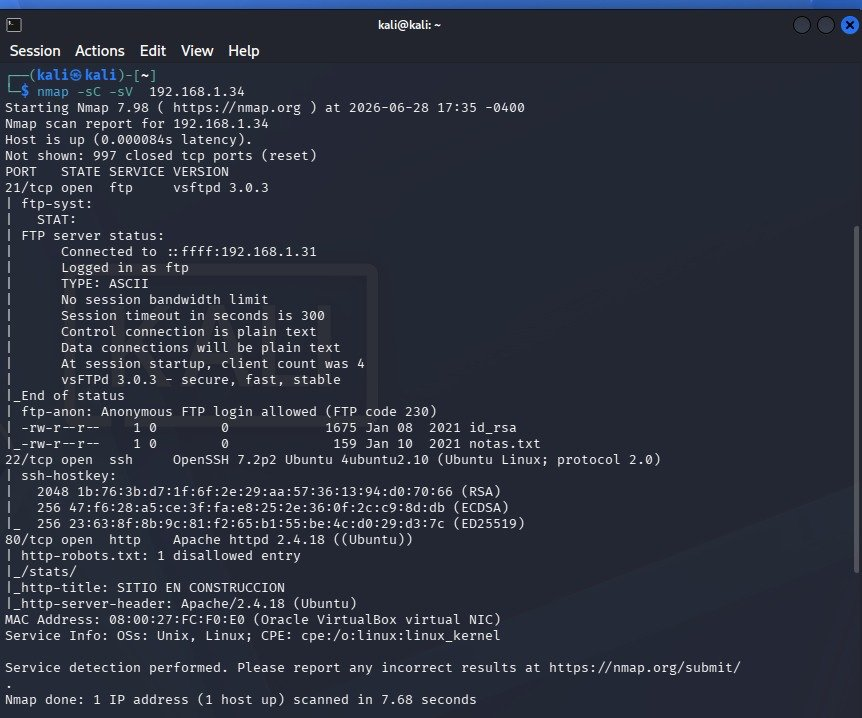
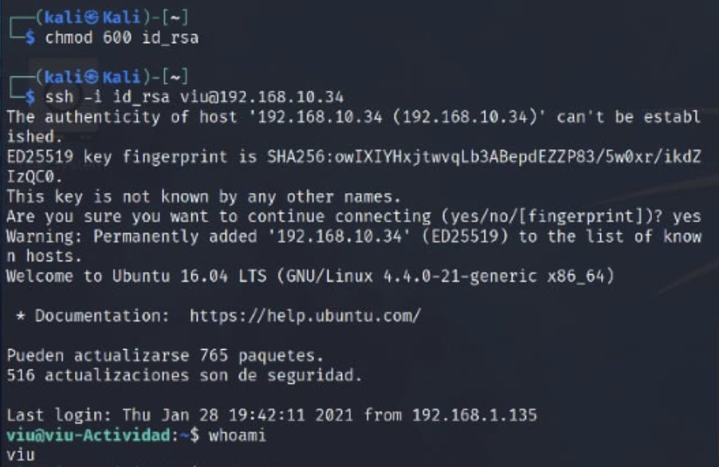
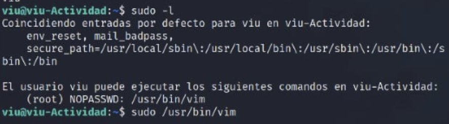
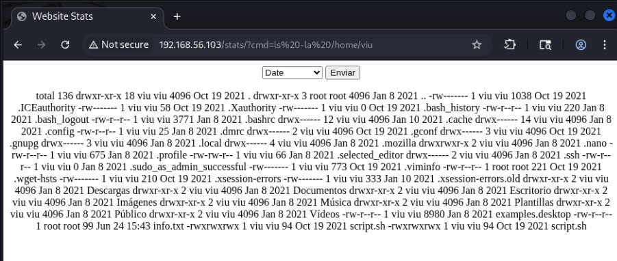
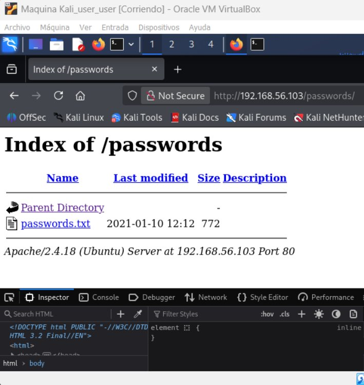
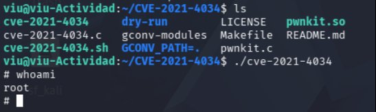
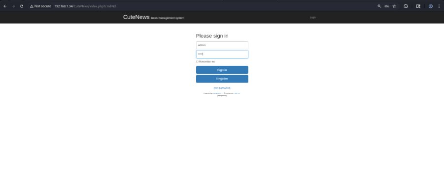
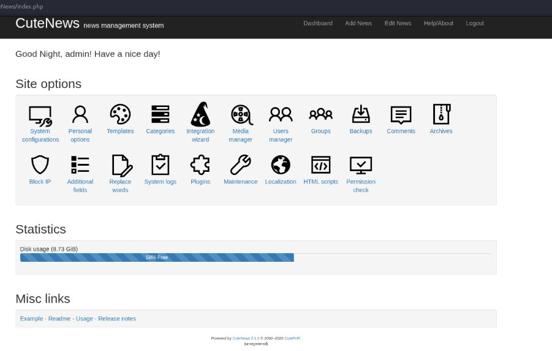

El punto de partida
Una máquina con tres puertas visibles desde fuera
Antes de tocar nada por dentro, un primer vistazo desde fuera ya mostraba tres servicios activos en la máquina: un servidor de transferencia de archivos, un acceso remoto seguro y una página web. Ninguno de los tres, por separado, es motivo de alarma —son servicios normales en casi cualquier servidor. El problema apareció en cómo estaba configurado cada uno de ellos.
Es el equivalente a inspeccionar un edificio desde la acera: se ven tres entradas, todas con aspecto normal. La auditoría consistió en probar, una por una, si de verdad estaban tan bien cerradas como parecía.

Vector 1Riesgo alto
La puerta de servicio, abierta y con la llave puesta
El servicio de transferencia de archivos permitía entrar como invitado, sin usuario ni contraseña —una opción llamada "acceso anónimo" que muchos sistemas traen activada por error. Dentro de esa carpeta pública había dos archivos que nunca debieron estar ahí: una llave de acceso remoto (una credencial digital que sustituye a la contraseña) y una nota de texto con el nombre del usuario del sistema.
Es como si una empresa dejara la puerta de servicio sin llave, y además colgara junto a ella una copia de la llave maestra con una nota pegada: "para el guardia nocturno, por si se le olvida la suya". El equipo simplemente entró, tomó ambas cosas, y las usó para acceder directamente como ese usuario.

Por qué importa para una empresa
Cualquier credencial de acceso —una llave, un token, una contraseña— guardada en un lugar de acceso público equivale a dejarla tirada en la calle. Un atacante no necesita adivinar nada: solo necesita mirar donde nadie debería haber dejado nada.
Cómo se corrige
Desactivar el acceso anónimo en los servicios de archivos que no lo necesiten, y no guardar nunca credenciales de acceso en carpetas compartidas o de acceso público.
Vector 2Riesgo crítico
Un permiso "inofensivo" que resultó ser la llave maestra
Ya dentro del sistema como usuario normal, se descubrió que ese usuario tenía permiso para abrir un editor de texto básico "como si fuera el administrador", sin que el sistema pidiera ninguna contraseña para ello. El detalle importante es que ese editor de texto, como muchos programas similares, tiene un atajo interno para abrir una línea de comandos completa desde dentro. Al abrir el editor como administrador, ese atajo también se abre con privilegios de administrador.
Es como si a un empleado se le diera la llave de un archivador concreto, sin saber que esa misma llave, por un descuido del fabricante, también abre la puerta principal del edificio.

Por qué importa para una empresa
Un solo permiso otorgado de más —incluso sobre un programa que parece completamente inofensivo, como un editor de texto— puede convertirse en el camino directo hacia el control total del sistema.
Cómo se corrige
Revisar qué programas tienen permiso para ejecutarse "como administrador sin contraseña", y no concederlo nunca a ninguno capaz de abrir una línea de comandos o ejecutar órdenes del sistema.
Vector 3Riesgo crítico
Una tarea automática que ejecuta, sin revisar, lo que cualquiera le deje escrito
El servidor ejecutaba automáticamente, cada cierto tiempo, una pequeña tarea de mantenimiento con permisos de administrador. El archivo que contenía esa tarea estaba configurado para que cualquier persona pudiera modificarlo libremente. El equipo simplemente reescribió su contenido, añadiendo una instrucción que abriría un canal de conexión hacia su propio equipo, y esperó a que el sistema ejecutara la tarea por su cuenta —como siempre hace, con permisos de administrador, sin preguntar nada.

Por qué importa para una empresa
Cualquier tarea automática que corra con permisos elevados es tan segura como el archivo del que lee sus instrucciones. Si cualquier empleado puede editar ese archivo, en la práctica cualquier empleado puede darse a sí mismo esos mismos permisos.
Cómo se corrige
Restringir los permisos de escritura sobre los archivos que ejecutan tareas automáticas con privilegios elevados, de forma que solo la propia cuenta de administrador pueda modificarlos.
Vector 4Riesgo alto
Una lista de contraseñas, publicada sin darse cuenta
En el propio sitio web de la empresa, dentro de una carpeta que cualquiera podía abrir con el navegador, apareció un archivo con una lista de posibles contraseñas. El equipo lo descargó y simplemente probó cada una contra el nombre de usuario descubierto en el vector anterior, hasta que una de ellas funcionó y permitió iniciar sesión como ese empleado.

Por qué importa para una empresa
Publicar cualquier cosa relacionada con contraseñas en un servidor web accesible al público —incluso por accidente, incluso "solo para pruebas"— equivale a entregarle a un atacante un manojo de llaves ya hecho.
Cómo se corrige
No almacenar nunca listas de contraseñas o archivos de credenciales en carpetas accesibles desde el sitio web; las credenciales deben vivir únicamente en sistemas dedicados y con control de acceso.
Vector 5Riesgo crítico
Un permiso demasiado generoso, más un parche que nunca se instaló
Aquí se juntaron dos problemas independientes que, cada uno por su lado, ya eran suficientes. Primero, la política de permisos del sistema decía "cualquiera del grupo general de administración puede aprobar acciones con privilegios", y el usuario ya comprometido resultó pertenecer justo a ese grupo. Segundo, incluso sin eso, una herramienta del sistema tenía un fallo conocido públicamente —con nombre propio, "PwnKit"— que permitía a cualquier usuario convertirse en administrador con una sola orden. El arreglo para ese fallo llevaba tiempo disponible; simplemente nunca se había instalado.

Por qué importa para una empresa
Dos señales distintas apuntan a la misma conclusión: los grupos de permisos demasiado amplios y las actualizaciones de seguridad pendientes de instalar son, cada uno por separado, suficientes para entregar el control total del sistema.
Cómo se corrige
Revisar quién pertenece a qué grupo de permisos y reducirlo a lo estrictamente necesario, y mantener los sistemas actualizados instalando los parches de seguridad tan pronto como se publican.
Vector 6Riesgo crítico
Una terminal olvidada en la web, y una caja fuerte con la combinación fácil de adivinar
Una página oculta del sitio web —encontrada simplemente probando nombres de carpeta habituales— resultó tener un cuadro que ejecutaba órdenes directamente en el servidor, sin pedir ningún inicio de sesión. A través de esa puerta, el equipo exploró los archivos del servidor, encontró una carpeta con datos de usuarios protegidos con un método de cifrado antiguo y débil, y dejó que un programa probara automáticamente combinaciones hasta dar con la contraseña original. Esa contraseña abría el panel completo de administración del sistema de noticias de la web.


Por qué importa para una empresa
Una sola herramienta de diagnóstico olvidada en el servidor, sumada a una forma anticuada de proteger las contraseñas guardadas, se traducen juntas en el control total del contenido y los datos de usuario de la empresa.
Cómo se corrige
Eliminar cualquier herramienta de ejecución de comandos que quede olvidada en los servidores en producción, y sustituir los métodos anticuados de proteger contraseñas por otros modernos, resistentes a la prueba automática de combinaciones.
En resumen
Por qué importa la cadena completa, no cada fallo por separado
Ninguno de estos seis fallos ocurrió en un sistema real ni afectó a una empresa de verdad —todo sucedió dentro de una máquina de entrenamiento, con autorización y con fines exclusivamente educativos. Pero cada uno de ellos, por separado, es un error que aparece con frecuencia en sistemas reales: una credencial mal guardada, un permiso demasiado generoso, un parche pendiente, una página olvidada. Ninguno exigió herramientas sofisticadas ni conocimientos avanzados. Lo que los vuelve críticos es que, encadenados, se refuerzan entre sí: cada fallo pequeño abrió la puerta al siguiente, hasta llegar al control total del sistema.
6 vectores encadenados · nivel de riesgo global CRÍTICO · recomendaciones de mitigación entregadas para cada vector